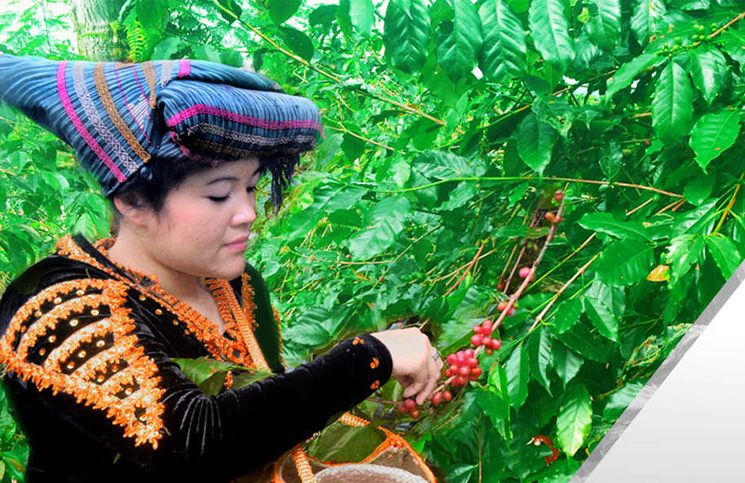

5 Penghasil Kopi terbaik dari Sumatera Utara

Kopi di Sumatera Utara khususnya dari Tanah Batak sudah sangat diakui kualitas menembus sampai pasar internasional. Jadi bangga yah, ternyata kopi asal Tanah Batak sangat diminati para pecinta kopi seluruh dunia. Berbagai jenis kopi ini bahkan menjadi identitas bagi beberapa daerah di Sumut.
Manfaat meminum kopi
Tidak sedikit orang yang beranggapan bahwa kopi tidak baik untuk kesehatan. Padahal sebenarnya kopi memiliki khasiat yang sangat baik untuk kesehatan tubuh kita.